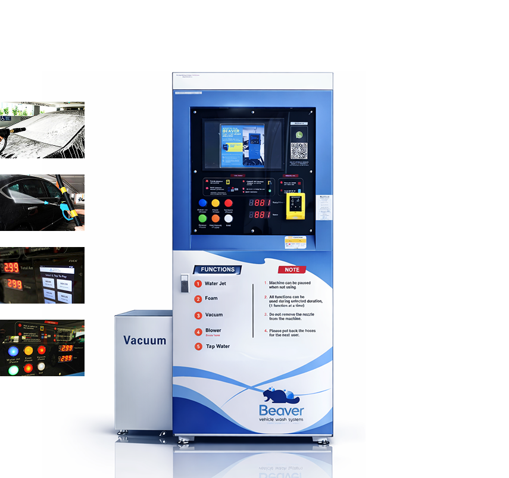

Start your car wash at our automatic car wash machine by making a payment.

Upgrade your business with an automatic car wash machine
Car wash machine
Automatic car wash machines are designed for complete car wash in Singapore, including rinsing, cleaning, vacuuming, and drying. Our car wash machine includes professional equipment for both exterior and interior cleaning to provide a professional finish.
-
Low staffing requirement
Automated car wash machines can operate with minimal human assistance, reducing labour costs.
-
Additional revenue stream
Car wash machines are designed to operate long hours, generating revenue 24/7.
-
Eco-friendly
Innovative water-saving technology conserves water, making it an environmentally responsible choice.
-
User-friendly
Clear instructions and simple controls guide users step-by-step through the auto car wash cycle, offering a user-friendly experience.
Rinse your vehicle thoroughly with water.
Apply automobile foam for vehicle exterior cleaning.
Then, dry your vehicle using the high-powered blower.
Vacuum the vehicle interior to remove interior dust and debris.
Wrap up by washing your hands or cloth at the washing bay.
-
Professional Equipment
For exterior cleaning, high-pressure jet, automobile foam, and blower are included for rinsing, washing, and drying. For interior cleaning, a vacuum is included to clear interior dust and debris, providing professional vehicle care.
-
Automobile Cleaning Detergent
Our car wash machines use commercial automobile cleaning detergent to maintain the quality of car paint and finish.
-
Pause & Resume Function
Pause and resume function is included for adjusting at any point during the wash, allowing users to wash their car at their own pace.
-

Cashless Payment System
Convenient and secure cashless payment options are available to ensure a smooth car wash experience without complications.


Business
Opportunities
Start your own venture
These days vehicle owners are aware of keeping their vehicles clean, but traditional vehicle washing services are costly, making them less sustainable in the long term. Automatic car wash machines introduce convenient and cost-effective solutions for vehicle owners. Since these automated car wash machines can also be used as bike cleaning machines, strategically placing them at high-traffic locations can maximize your benefits.
HDB car park washing machines, office building car park washing machines, and industrial car wash machines are some popular installation locations because of their high traffic nature and consistent demand.
Whether you are starting a self-service car wash machine business or upgrading your existing car wash business, selecting the right equipment and supplier enhances efficiency. By choosing Beaver Energy as your partner, you will have proven technology, comprehensive support, location recommendation, and a concept that's already trusted by vehicle owners.
Frequently Asked Questions
Contact our team with your location and campaign goals. We will share advertising options, placement details, and a tailored quote for promoting your car wash machine on-site or across our network.
Yes, the system is designed to accommodate a wide range of vehicle types, including cars, trucks, SUVs, and vans. Its adjustable settings ensure a safe and effective cleaning process for different sizes and styles of vehicles.
Yes. Our machines use commercial automobile cleaning detergent and controlled wash cycles designed to protect paint and finish while delivering a thorough clean for both exterior and interior care.
Beaver Energy car wash machines are installed at high-traffic sites such as HDB car parks, office buildings, and industrial locations across Singapore. Contact us for the nearest unit or partnership opportunities in your area.
Yes. The machine includes a pause and resume function so you can adjust at any point during the wash and continue at your own pace when you are ready.
Convenient and secure cashless payment options are available at the machine, so you can start your wash quickly without complications.